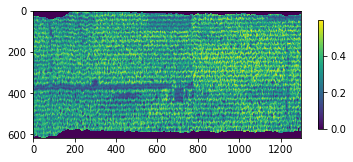
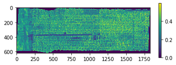
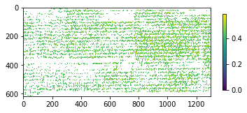
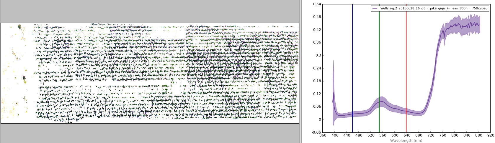
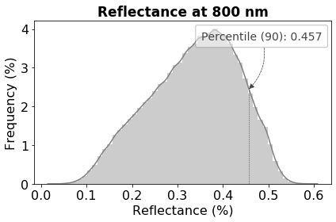

8.1.4. hstools¶
-
class
hs_process.hstools(spyfile)[source]¶ Bases:
objectBasic tools for manipulating Spyfiles and accessing their metadata.
- Parameters
spyfile (
SpyFileobject) -- The datacube being accessed and/or manipulated.
Methods Summary
clean_md_sets([metadata])Converts metadata items that are expressed as a list to be expressed as a dictionary.
del_meta_item(metadata, key)Deletes metadata item from SpyFile object.
get_UTM(pix_e_ul, pix_n_ul, utm_x, utm_y, ...)Calculates the new UTM coordinate of cropped plot to modify the "map info" tag of the .hdr file.
get_band(target_wl[, spyfile])Finds the band number of the closest target wavelength.
get_band_index(band_num)Subtracts 1 from
band_numand returns the band index(es).get_band_num(band_idx)Adds 1 to
band_idxand returns the band number(s).get_band_range(range_wl[, index, spyfile])Retrieves the band index or band number for all bands within a wavelength range.
get_center_wl(wl_list[, spyfile, wls])Gets band numbers and mean wavelength from all wavelengths (or bands) in
wl_list.get_meta_set(meta_set[, idx])Reads metadata "set" (i.e., string representation of a Python set; common in .hdr files), taking care to remove leading and trailing spaces.
get_spectral_mean(band_list[, spyfile])Gets the spectral mean of a datacube from a list of bands.
get_wavelength(target_band[, spyfile])Returns actual wavelength of the closest target band.
load_spyfile(spyfile)Loads a
SpyFile(Spectral Python object) for data access and/or manipulation by thehstoolsclass.mask_array(array, metadata[, thresh, ...])Creates a masked numpy array based on a threshold value.
mean_datacube(spyfile[, mask])Calculates the mean spectra for a datcube; if
maskis passed (as amodify_meta_set(meta_set, idx, value)Modifies metadata "set" (i.e., string representation of a Python set; common in .hdr files) by converting string to list, then adjusts the value of an item by its index.
plot_histogram(array[, fname_fig, title, ...])Plots a histogram with the percentile value labeled.
Methods Documentation
-
clean_md_sets(metadata=None)[source]¶ Converts metadata items that are expressed as a list to be expressed as a dictionary.
- Parameters
metadata (
dict, optional) -- Metadata dictionary to clean- Returns
metadata_out (
dict) -- Cleaned metadata dictionary.- Return type
dict
Example
Load and initialize
hsio>>> from hs_process import hsio >>> fname_in = r'F:\nigo0024\Documents\hs_process_demo\Wells_rep2_20180628_16h56m_pika_gige_7-Convert Radiance Cube to Reflectance from Measured Reference Spectrum.bip.hdr' >>> io = hsio(fname_in)
Create sample metadata with "wavelength" expressed as a list of strings
>>> metadata = {'samples': 1300, 'lines': 617, 'bands': 4, 'file type': 'ENVI Standard', 'wavelength': ['394.6', '396.6528', '398.7056', '400.7584']}
Clean metadata using
hstools.clean_md_sets. Notice how wavelength is now expressed as astrrepresentation of adict, which is required for properly writing the metadata to the .hdr file via save_image() in Spectral Python.>>> io.tools.clean_md_sets(metadata=metadata) {'samples': 1300, 'lines': 617, 'bands': 4, 'file type': 'ENVI Standard', 'wavelength': '{394.6, 396.6528, 398.7056, 400.7584}'}
-
del_meta_item(metadata, key)[source]¶ Deletes metadata item from SpyFile object.
- Parameters
metadata (
dict) -- dictionary of the metadatakey (
str) -- dictionary key to delete
- Returns
metadata (
dict) -- Dictionary containing the modified metadata.- Return type
dict
Example
Load and initialize
hsio>>> from hs_process import hsio >>> fname_in = r'F:\nigo0024\Documents\hs_process_demo\Wells_rep2_20180628_16h56m_pika_gige_7-Convert Radiance Cube to Reflectance from Measured Reference Spectrum.bip.hdr' >>> io = hsio(fname_in)
Create sample metadata
>>> metadata = {'samples': 1300, 'lines': 617, 'bands': 4, 'file type': 'ENVI Standard', 'map info': '{UTM, 1.0, 1.0, 421356.76707299997, 4844936.7317699995, 0.04, 0.04, 15, T, WGS-84, units meters, rotation 0.000}', 'wavelength': ['394.6', '396.6528', '398.7056', '400.7584']}
Delete "map info" from
metadatausinghstools.del_met_item>>> io.tools.del_meta_item(metadata, 'map info') {'samples': 1827, 'lines': 617, 'bands': 4, 'file type': 'ENVI Standard', 'wavelength': ['394.6', '396.6528', '398.7056', '400.7584']}
-
get_UTM(pix_e_ul, pix_n_ul, utm_x, utm_y, size_x, size_y)[source]¶ Calculates the new UTM coordinate of cropped plot to modify the "map info" tag of the .hdr file.
- Parameters
pix_e_ul (
int) -- upper left column (easting) where image cropping begins.pix_n_ul (
int) -- upper left row (northing) where image cropping begins.utm_x (
float) -- UTM easting coordinates (meters) of the original image (from the upper left).utm_y (
float) -- UTM northing coordinates (meters) of the original image (from the upper left).size_x (
float) -- Ground resolved distance of the image pixels in the x (easting) direction (meters).size_y (
float) -- Ground resolved distance of the image pixels in the y (northing) direction (meters).
- Returns
2-element
tuplecontainingutm_x_new (
float): The modified UTM x coordinate (easting) of cropped plot.utm_y_new (
float): The modified UTM y coordinate (northing) of cropped plot.
Example
Load and initialize
hsio>>> from hs_process import hsio >>> fname_in = r'F:\nigo0024\Documents\hs_process_demo\Wells_rep2_20180628_16h56m_pika_gige_7-Convert Radiance Cube to Reflectance from Measured Reference Spectrum.bip.hdr' >>> io = hsio(fname_in)
Retrieve UTM coordinates and pixel sizes from the metadata
>>> map_info_set = io.spyfile.metadata['map info'] >>> utm_x = io.tools.get_meta_set(map_info_set, 3) >>> utm_y = io.tools.get_meta_set(map_info_set, 4) >>> spy_ps_e = float(map_info_set[5]) >>> spy_ps_n = float(map_info_set[6])
Calculate the UTM coordinates at the 100th easting pixel and 50th northing pixel using
hstools.get_UTM>>> ul_x_utm, ul_y_utm = io.tools.get_UTM(100, 50, utm_x, utm_y, spy_ps_e, spy_ps_n) >>> ul_x_utm 441360.80707299995 >>> ul_y_utm 4855934.691769999
-
get_band(target_wl, spyfile=None)[source]¶ Finds the band number of the closest target wavelength.
- Parameters
target_wl (
intorfloat) -- the target wavelength to retrieve the band number for (required).spyfile (
SpyFileobject, optional) -- The datacube being accessed and/or manipulated; ifNone, useshstools.spyfile(default:None).
- Returns
key_band (
int) -- band number of the closest target wavelength (target_wl).- Return type
int
Example
Load and initialize
hsio>>> from hs_process import hsio >>> fname_in = r'F:\nigo0024\Documents\hs_process_demo\Wells_rep2_20180628_16h56m_pika_gige_7-Convert Radiance Cube to Reflectance from Measured Reference Spectrum.bip.hdr' >>> io = hsio(fname_in)
Use
hstools.get_bandto find the band number corresponding to 703 nm>>> io.tools.get_band(703, io.spyfile) 151
-
get_band_index(band_num)[source]¶ Subtracts 1 from
band_numand returns the band index(es).- Parameters
band_num (
intorlist) -- the target band number(s) to retrieveband index for (the) --
- Returns
band_idx (
int) -- band index of the passed band number (band_num).- Return type
intorlist
Example
Load and initialize
hsio>>> from hs_process import hsio >>> fname_in = r'F:\nigo0024\Documents\hs_process_demo\Wells_rep2_20180628_16h56m_pika_gige_7-Convert Radiance Cube to Reflectance from Measured Reference Spectrum.bip.hdr' >>> io = hsio(fname_in)
Using
hstools.get_band_index, find the band index of the 4th, 43rd, and 111th bands>>> io.tools.get_band_index([4, 43, 111]) [3, 42, 110]
-
get_band_num(band_idx)[source]¶ Adds 1 to
band_idxand returns the band number(s).- Parameters
band_idx (
intorlist) -- the target band index(es) to retrive the band number for (required).- Returns
band_num (
intorlist): band number of the passed band index (band_idx).- Return type
intorlist
Example
Load and initialize
hsio>>> from hs_process import hsio >>> fname_in = r'F:\nigo0024\Documents\hs_process_demo\Wells_rep2_20180628_16h56m_pika_gige_7-Convert Radiance Cube to Reflectance from Measured Reference Spectrum.bip.hdr' >>> io = hsio(fname_in)
Using
hstools.get_band_num, find the band number located at the 4th, 43rd, and 111th index values.>>> io.tools.get_band_num([4, 43, 111]) [5, 44, 112]
-
get_band_range(range_wl, index=True, spyfile=None)[source]¶ Retrieves the band index or band number for all bands within a wavelength range.
- Parameters
range_wl (
list) -- the minimum and maximum wavelength to consider; values should beintorfloat.index (bool) -- Indicates whether to return the band number (
False; min=1) or to return index number (True; min=0) (default:True).
- Returns
band_list (
list): A list of all bands (either index or number, depending on howindexis set) between a range in wavelength values.- Return type
list
Example
Load and initialize
hsio>>> from hs_process import hsio >>> fname_in = r'F:\nigo0024\Documents\hs_process_demo\Wells_rep2_20180628_16h56m_pika_gige_7-Convert Radiance Cube to Reflectance from Measured Reference Spectrum.bip.hdr' >>> io = hsio(fname_in)
Find the band number of all bands between 700 and 710 nm
>>> io.tools.get_band_range([700, 710], index=False, spyfile=io.spyfile) [150, 151, 152, 153, 154]
Find the band index values of all bands between 700 and 710 nm via
hstools.get_band_range>>> io.tools.get_band_range([700, 710], index=True, spyfile=io.spyfile) [149, 150, 151, 152, 153]
-
get_center_wl(wl_list, spyfile=None, wls=True)[source]¶ Gets band numbers and mean wavelength from all wavelengths (or bands) in
wl_list.- Parameters
wl_list (
list) -- the list of bands to get information for (required).spyfile (
SpyFileobject) -- The datacube being accessed and/or manipulated; ifNone, useshstools.spyfile(default:None).wls (
bool) -- whether wavelengths are passed inwl_listor if bands are passed inwl_list(default:True- wavelenghts passed).
- Returns
2-element
tuplecontainingbands (
list): the list of bands (band number) corresponding towl_list.wls_mean (
float): the mean wavelength fromwl_list.
Example
Load and initialize
hsio>>> from hs_process import hsio >>> fname_in = r'F:\nigo0024\Documents\hs_process_demo\Wells_rep2_20180628_16h56m_pika_gige_7-Convert Radiance Cube to Reflectance from Measured Reference Spectrum.bip.hdr' >>> io = hsio(fname_in)
Using
hstools.get_center_wl, find the bands and actual mean wavelength of the bands closest to 700 and 710 nm.>>> bands, wls_mean = io.tools.get_center_wl([700, 710], wls=True) >>> bands [150, 155] >>> wls_mean 705.5992
-
get_meta_set(meta_set, idx=None)[source]¶ Reads metadata "set" (i.e., string representation of a Python set; common in .hdr files), taking care to remove leading and trailing spaces.
- Parameters
meta_set (
str) -- the string representation of the metadata setidx (
int) -- index to be read; ifNone, the whole list is returned (default:None).
- Returns
metadata_list (
listorstr): List of metadata set items (asstr), or if idx is notNone, the item in the position described byidx.- Return type
listorstr
Example
Load and initialize
hsio>>> from hs_process import hsio >>> fname_in = r'F:\nigo0024\Documents\hs_process_demo\Wells_rep2_20180628_16h56m_pika_gige_7-Convert Radiance Cube to Reflectance from Measured Reference Spectrum.bip.hdr' >>> io = hsio(fname_in)
Retrieve the "map info" set from the metadata via
hstools.get_meta_set>>> map_info_set = io.spyfile.metadata['map info'] ['UTM', '1.0', '1.0', '441357.287073', '4855944.7717699995', '0.04', '0.04', '15', 'T', 'WGS-84', 'units meters', 'rotation 0.000']
-
get_spectral_mean(band_list, spyfile=None)[source]¶ Gets the spectral mean of a datacube from a list of bands.
- Parameters
band_list (
list) -- the list of bands to calculate the spectral mean for on the datacube (required).spyfile (
SpyFileobject ornumpy.ndarray) -- The datacube being accessed and/or manipulated; ifNone, useshstools.spyfile(default:None).
- Returns
array_mean (
numpy.arrayorpandas.DataFrame): The mean reflectance fromspyfilefor the bands inband_list.- Return type
numpy.arrayorpandas.DataFrame
Example
Load and initialize
hsio>>> from hs_process import hsio >>> fname_in = r'F:\nigo0024\Documents\hs_process_demo\Wells_rep2_20180628_16h56m_pika_gige_7-Convert Radiance Cube to Reflectance from Measured Reference Spectrum.bip.hdr' >>> io = hsio(fname_in)
Calculate the spectral mean of the datacube via
hstools.get_spectral_meanusing all bands between 800 and 840 nm>>> band_list = io.tools.get_band_range([800, 840], index=False) >>> array_mean = io.tools.get_spectral_mean(band_list, spyfile=io.spyfile) >>> io.show_img(array_mean)
-
get_wavelength(target_band, spyfile=None)[source]¶ Returns actual wavelength of the closest target band.
- Parameters
target_band (
intorfloat) -- the target band to retrieve wavelength number for (required).spyfile (
SpyFileobject, optional) -- The datacube being accessed and/or manipulated; ifNone, useshstools.spyfile(default:None).
- Returns
key_wavelength (
float) -- wavelength of the closest target band (target_band).- Return type
float
Example
Load and initialize
hsio>>> from hs_process import hsio >>> fname_in = r'F:\nigo0024\Documents\hs_process_demo\Wells_rep2_20180628_16h56m_pika_gige_7-Convert Radiance Cube to Reflectance from Measured Reference Spectrum.bip.hdr' >>> io = hsio(fname_in)
Use
hstools.get_wavelengthto find the wavelength value corresponding to the 151st band>>> io.tools.get_wavelength(151, io.spyfile) 702.52
-
load_spyfile(spyfile)[source]¶ Loads a
SpyFile(Spectral Python object) for data access and/or manipulation by thehstoolsclass.- Parameters
spyfile (
SpyFileobject) -- The datacube being accessed and/or manipulated.
Example
Load and initialize
hsio>>> from hs_process import hsio >>> fname_in = r'F:\nigo0024\Documents\hs_process_demo\Wells_rep2_20180628_16h56m_pika_gige_7-Convert Radiance Cube to Reflectance from Measured Reference Spectrum.bip.hdr' >>> io = hsio(fname_in)
Load a new datacube using
hstools.load_spyfile>>> io.tools.load_spyfile(io.spyfile) >>> io.tools.spyfile Data Source: 'F:\nigo0024\Documents\hs_process_demo\Wells_rep2_20180628_16h56m_pika_gige_7-Convert Radiance Cube to Reflectance from Measured Reference Spectrum.bip' # Rows: 617 # Samples: 1300 # Bands: 240 Interleave: BIP Quantization: 32 bits Data format: float32
-
mask_array(array, metadata, thresh=None, percentile=None, side='lower')[source]¶ Creates a masked numpy array based on a threshold value. If
arrayis already a masked array, that mask is maintained and the new mask(s) is/ are added to the original mask.- Parameters
array (
numpy.ndarray) -- The data array to mask.thresh (
floatorlist) -- The value for which to base the threshold; ifthreshislistandsideisNone, then all values inthreshwill be masked; ifthreshislistandsideis notNone, then only the first value in the list will be considered for thresholding (default:None).percentile (
float) -- The percentile of pixels to mask; ifpercentile= 95 andside= 'lower', the lowest 95% of pixels will be masked prior to calculating the mean spectra across pixels (default:None; range: 0-100).side (
str) -- The side of the threshold for which to apply the mask. Must be either 'lower', 'upper', orNone; if 'lower', everything below the threshold will be masked; ifNone, only the values that exactly match the threshol will be masked (default: 'lower').
- Returns
2-element
tuplecontainingarray_mask (
numpy.ndarray): The maskednumpy.ndarraybased on the passed threshold and/or percentile value.metadata (
dict): The modified metadata.
Example
Load and initialize
hsio>>> from hs_process import hsio >>> fname_in = r'F:\nigo0024\Documents\hs_process_demo\Wells_rep2_20180628_16h56m_pika_gige_7-Convert Radiance Cube to Reflectance from Measured Reference Spectrum.bip.hdr' >>> io = hsio(fname_in)
Retrieve the image band at 800 nm using
hstools.get_bandandhsio.spyfile.open_memmap>>> band = io.tools.get_band(800) >>> array = io.spyfile.open_memmap()[:, :, band]
Create a masked array of all values below the 75th percentile via
hstools.mask_array>>> array_mask, metadata = io.tools.mask_array(array, io.spyfile.metadata, percentile=75, side='lower')
See that the "history" tage in the
metadatahas been modified>>> metadata['history'][-158:] "hs_process.mask_array[<label: 'thresh?' value:None; label: 'percentile?' value:75; label: 'side?' value:lower; label: 'unmasked_pct?' value:24.9935170178282>]"
Visualize the unmasked array using
hsio.show_img. Setvminandvmaxto ensure the same color scale is used in comparing the masked vs. unmasked arrays.>>> vmin = array.min() >>> vmax = array.max() >>> io.show_img(array, vmin=vmin, vmax=vmax)
Visualize the unmasked array using
hsio.show_img>>> io.show_img(array_mask, vmin=vmin, vmax=vmax)
-
mean_datacube(spyfile, mask=None)[source]¶ Calculates the mean spectra for a datcube; if
maskis passed (as anumpy.ndarray), then the mask is applied tospyfileprior to computing the mean spectra.- Parameters:
- spyfile (
SpyFileobject ornumpy.ndarray): The hyperspectral datacube to mask.
- mask (
numpy.ndarray): the mask to apply tospyfile; if maskdoes not have similar dimensions tospyfile, the first band (i.e., first two dimensions) ofmaskwill be repeated n times to match the number of bands ofspyfile(default:None).
- spyfile (
- Returns:
3-element
tuplecontainingspec_mean (
SpyFile.SpyFileobject): The mean spectra from the input datacube.spec_std (
SpyFile.SpyFileobject): The standard deviation of the spectra from the input datacube.datacube_masked (
numpy.ndarray): The maskednumpy.ndarray; ifmaskisNone,datacube_maskedis identical to theSpyFiledata array.
- Example:
Load and initialize
hsio>>> from hs_process import hsio >>> fname_in = r'F:\nigo0024\Documents\hs_process_demo\Wells_rep2_20180628_16h56m_pika_gige_7-Convert Radiance Cube to Reflectance from Measured Reference Spectrum.bip.hdr' >>> io = hsio(fname_in)
Retrieve the image band at 800 nm using
hstools.get_bandandhsio.spyfile.open_memmap, then mask out all pixels whose value falls below the 75th percentile.>>> band = io.tools.get_band(800) >>> array = io.spyfile.open_memmap()[:, :, band] >>> array_mask, metadata = io.tools.mask_array(array, io.spyfile.metadata, percentile=75, side='lower')
Calculate the spectral mean from the remaining (i.e., unmasked) pixels using
hstools.mean_datacube.>>> spec_mean, spec_std, datacube_masked = io.tools.mean_datacube(io.spyfile, mask=array_mask)
Save using
hsio.write_specandhsio.write_cube, then load into Spectronon software for visualization.>>> fname_hdr_spec = r'F:\nigo0024\Documents\hs_process_demo\hstools\Wells_rep2_20180628_16h56m_pika_gige_7-mean_800nm_75th.spec.hdr' >>> fname_hdr_cube = r'F:\nigo0024\Documents\hs_process_demo\hstools\Wells_rep2_20180628_16h56m_pika_gige_7-mean_800nm_75th.bip.hdr' >>> io.write_spec(fname_hdr_spec, spec_mean, spec_std, metadata=metadata) Saving F:
- igo0024Documentshs_process_demohstoolsWells_rep2_20180628_16h56m_pika_gige_7-mean_800nm_75th.spec
>>> io.write_cube(fname_hdr_cube, datacube_masked, metadata=metadata) Saving F:
igo0024Documentshs_process_demohstoolsWells_rep2_20180628_16h56m_pika_gige_7-mean_800nm_75th.bip

-
modify_meta_set(meta_set, idx, value)[source]¶ Modifies metadata "set" (i.e., string representation of a Python set; common in .hdr files) by converting string to list, then adjusts the value of an item by its index.
- Parameters
meta_set (
str) -- the string representation of the metadata setidx (
int) -- index to be modified; ifNone, the whole meta_set is returned (default:None).value (
float,int, orstr) -- value to replace at idx
- Returns
set_str (
str): Modified metadata set string.- Return type
str
Example
Load and initialize
hsio>>> from hs_process import hsio >>> fname_in = r'F:\nigo0024\Documents\hs_process_demo\Wells_rep2_20180628_16h56m_pika_gige_7-Convert Radiance Cube to Reflectance from Measured Reference Spectrum.bip.hdr' >>> io = hsio(fname_in)
Retrieve the "map info" set from the metadata via
hstools.get_meta_set>>> map_info_set = io.spyfile.metadata['map info'] >>> map_info_set ['UTM', '1.0', '1.0', '441357.287073', '4855944.7717699995', '0.04', '0.04', '15', 'T', 'WGS-84', 'units meters', 'rotation 0.000']
Modify the value at index position 4 from
4855944.7717699995to441300.2usinghstools.modify_meta_set.>>> io.tools.modify_meta_set(map_info_set, idx=4, value=441300.2) '{UTM, 1.0, 1.0, 441357.287073, 441300.2, 0.04, 0.04, 15, T, WGS-84, units meters, rotation 0.000}'
-
plot_histogram(array, fname_fig=None, title=None, xlabel=None, percentile=90, bins=50, fontsize=16, color='#444444')[source]¶ Plots a histogram with the percentile value labeled.
- Parameters
array (
numpy.ndarray) -- The data array used to create the histogram for; ifarrayis masked, the masked pixels are excluded from the histogram.fname_fig (
str, optional) -- The filename to save the figure to; ifNone, the figure will not be saved (default:None).title (
str, optional) -- The plot title (default:None).xlabel (
str, optional) -- The x-axis label of the histogram (default:None).percentile (
scalar, optional) -- The percentile to label and illustrate on the histogram; ifpercentile= 90, the band/spectral index value at the 90th percentile will be labeled on the plot (default: 90; range: 0-100).bins (
int, optional) -- Number of histogram bins (default: 50).fontsize (
scalar) -- Font size of the axes labels. The title and text annotations will be scaled relatively (default: 16).color (
str, optional) -- Color of the histogram columns (default: "#444444")
- Returns
Figure object showing the histogram.
- Return type
fig (
matplotlib.figure)
Example
Load and initialize
hsio>>> from hs_process import hsio >>> fname_in = r'F:\nigo0024\Documents\hs_process_demo\Wells_rep2_20180628_16h56m_pika_gige_7-Convert Radiance Cube to Reflectance from Measured Reference Spectrum.bip.hdr' >>> io = hsio(fname_in)
Retrieve the image band at 800 nm using
hstools.get_bandandhsio.spyfile.open_memmap>>> band = io.tools.get_band(800) >>> array = io.spyfile.open_memmap()[:, :, band]
Create a masked array of all values below the 5th percentile via
hstools.mask_array>>> array_mask, metadata = io.tools.mask_array(array, io.spyfile.metadata, percentile=5, side='lower')
Visualize the histogram of the unmasked pixels (i.e., those greater than the 5th percentile) using
hstools.plot_histogram>>> title = 'Reflectance at 800 nm' >>> xlabel = 'Reflectance (%)' >>> fig = io.tools.plot_histogram(array_mask, title=title, xlabel=xlabel)